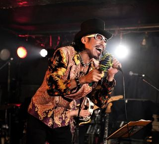
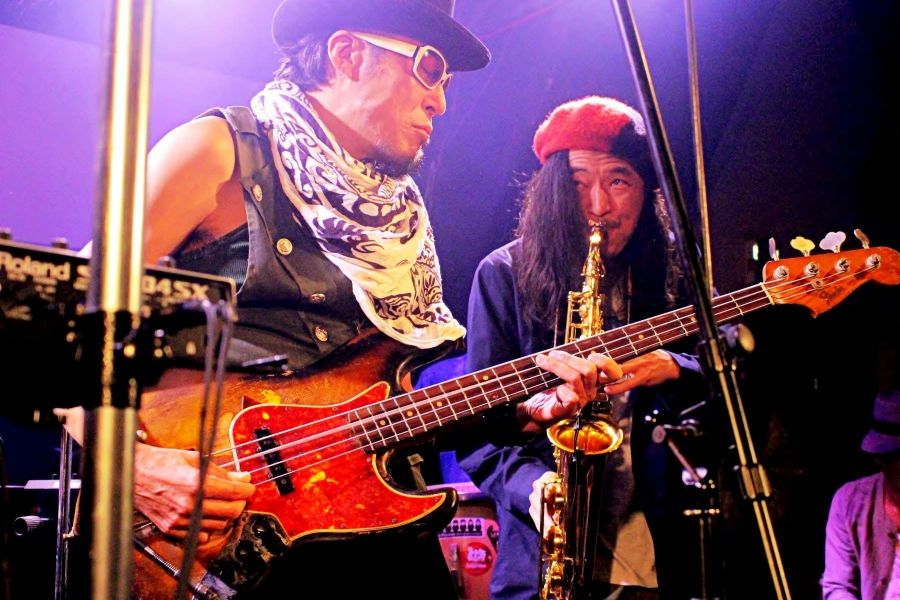

Dr.Tosh/永井利充 −オフィシャルサイト−
Profile
ローザ・ルクセンブルグにて MIDIRECORDよりデビュー。
その後、どんと(久富隆司)とともに伝説のバンド、BO GUMBOS (ボガンボス)を結成。
ニューオリンズサウンドを基盤においたその独自のサウンドは唯一無二の存在であり、今もなお国内のアーティスト達に多大なる影響を及ぼしている。
ボ・ディドリー、ネビルブラザースのメンバーなどをゲストに迎えてのファーストアルバムは、レコード大賞ニューアーティストアルバム賞に輝く。
現在はcelebrationバンドHareHareでの活動も行っている。
プロフィール詳細ページ
BO GUMBOS (ボガンボス)紹介ページ
HareHare紹介ページ
News
- 【2020/5/29 更新】
- ソニーミュージックより期間限定でリリースされている名演ライヴ映像特集第2弾にて、BO GUMBOSの映像が無料配信されています。
- ＞otonano presents STAY AT HOME & WATCH THE MUSIC
- REBECCAやTHE MODSとあわせて楽曲紹介されています。
- ＞JIJI.com
- こちらのリンクからBO GUMBOSの配信動画が直接ご覧いただけます。
- ＞配信動画
- 【2020/5/23 更新】
- 2020/7/5予定HOTMOTTOGUMBO 2020@kyoto磔磔イベント中止のお知らせ
- 【2020/5/16 更新】
-
いつも応援していただき誠にありがとうございます。
新型コロナウィルス感染拡大の影響を受け、皆様の健康と安全を考慮し、現在全ライブスケジュールを延期させていただいております。
尚、ライブ再開のめどが立ち次第HPにてスケジュールなどを告知いたしますので、今後ともよろしくお願い致します
僕らの美しき碧い愛の星。 丸い大きな神秘のシャボン玉 テラという名のこの地球。 そこから発されるメッセージは、時には人類にとってとても厳しいこともあります。 でも、少しアングルを変えてみたらどうでしょう。 世界が少し立ち止まったことで、空は空へ、水は水へ、土は土へ、緑は緑へ、心は心へと、もともとあるべき姿へと美しく蘇った現実がそこにはある。 このとてもシンプルな現実はいったい僕らに何を教えてくれてるのだろうか。 このシンプルなメッセージを真摯に受け止めて、未来へとどう繋いでいくべきかをみんなで心静かに考えてみることも大切だと思っています。 尚、ツアー延期により お待たせしてしまっている全国の心ある皆様。僕も本当に残念です。 現在、僕は自粛ではなく、内なる世界へとのびのびと羽を伸ばして新たな音世界を広げております。 また、新しいページで会えるのを楽しみにしています。 その時は是非ご一緒に祝祭いたしましょう。 Dr.Tosh永井利充より
- 


- 


sale
Dr.Tosh/永井利充のオンラインショップ「Grandma」
Dr.Tosh/永井利充のデジタルコンテンツ（ダウンロード音源）やCD、HareHareメンバーのオリジナルグッズなど取り揃えたオンラインショップがオープンしました。是非お立ち寄りください!
talk
星野源さんとの《ここだけの話》
星野源さんが、5/26放送の『星野源のオールナイトニッポン』にてボガンボス の《あこがれの地へ》を紹介してくれてます。
ボガンボスHot Hot Gumbo京大西部講堂のDVDライブ映像についても臨場感あふれるコメントしてくれていて、本当にボガンボス のことが大好きなんだなぁ〜とその想いが伝わってきてとても素直に嬉しく思いました。ありがとうございました。
尚、視聴期限があるためお早めにチェックしてみてください。さらに『NHKおげんさんといっしょ』でも紹介していただきました。
是非、いつの日か僕らの演奏の中、星野源さんに『あこがれの地へ』を熱唱していただきたいと思っています。
忌野清志郎さんとの《ここだけの話》
2006年にNHKホールで行われた『soul of どんと2006』はどんとの追悼コンサートという枠を越えて『どんと紅白』と銘打ってボガンボス、ローザ、どんとソロ時代の名曲を一流アーティストの皆さんが白組、紅組に分かれ、メンバーの演奏にのせて歌い舞うという大祝祭となった。
ハナレグミ、YO-KING、竹中直人、UA、岸田繁(くるり)、宮澤和史、古謝美佐子、AMANAという 豪華ゲストのトリを飾ったのが、忌野清志郎だった。
それぞれのアーティストが好きな曲目を選んでステージで想いを込めて歌い紡ぐ中、清志郎さんが選んでくれたのは、どんとソロ時代の曲『孤独な詩人』だった。
「こんな感じでやりたいんだよね」と、自ら歌、ドラム、ギター、ベースを録音したデモテープまでいただき、その真っ直ぐな本気の想いにあらためて感激したことを今でも覚えています。
コンサート当日は、清志郎さんは体調を崩しているにもかかわらず最幸のSoulと歌を120%奉納していただき、最後にはあの！『マントショー』までプレゼントしてくれました。
メンバー全員が清志郎さんの熱い歌に引き込まれて最幸の音たちが生まれ、会場が自然とひとつになり、大興奮の中祝祭は幕を閉じたのです。
清志郎さんの大ファンだった心友どんとの曲『孤独な詩人』をまるで自分の曲のように心の底から熱唱する清志郎さん。僕の心の中には今でも清志郎さんの歌声が響き続けています。
『星になったのさー 星になったのさー あいつは星になったのさー 星になったのさー』
清志郎さん！本当に心から心からありがとうございました！またいつか何処かでご一緒できますように！その時は素敵な新曲聴かせてください！！
どんと 2000/1/28 星になったのさ
忌野清志郎 2009/5/2 星になったのさ
踊ってばかりの国との《ここだけの話》
2020/1/28『どんと20周年祭〜2020魂の成人式』@下北沢Que
日本のロックスターどんとが肉体を離れて20年。その音楽性やスピリットは今なお日本の音楽シーンに多大なる影響を与え続けている。
その存在感は歳月を重ねるごとに増している。ボガンボス、ローザのメンバーを中心にした『ボガンボローザ』と多彩なゲストがステージ上で名曲の数々を歌い踊り笑い泣き、満員御礼のファンとともにどんと魂の成人式の大祝祭がおこなわれた。
中でも注目のサイケデリックロックンロールバンド踊ってばかりの国の爆音でかつ繊細な極上サイケなセンスとは一瞬でリンクしてしまった。彼らとは宇宙家族に違いない。どこか魂が懐かしく感じたのだ。もちろん下津君とのチューニングも瞬時に完了。メンバーたちも昔からの仲間のようだった。
彼らはステージでボガンボスの『トンネル抜けて』をサイケデリックダブヴァージョンで奉納してくれた。イカシタ音だったのを覚えている。
その後、『絶体絶命』『あこがれの地へ』『おめでとう』などを一緒に奉納。彼らとはまた、是非一緒に祝祭したいと思っています。彼らの情報は上記サイトにてチェックできるのでよろしく〜
Social